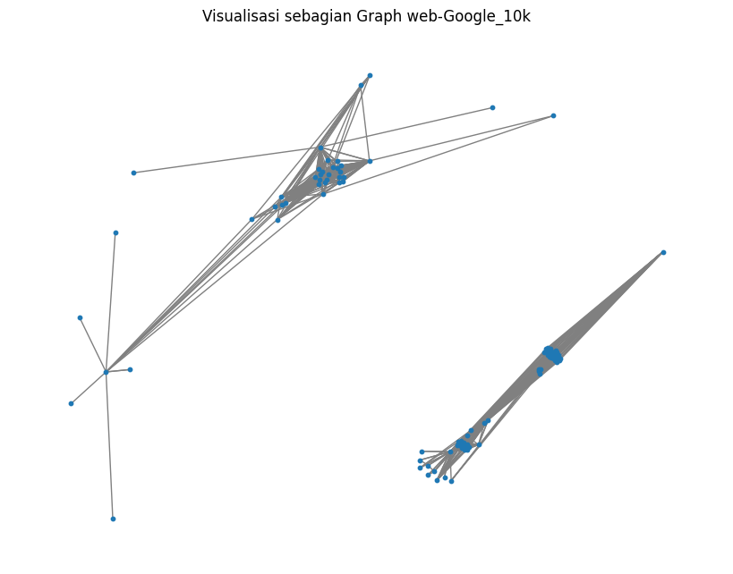
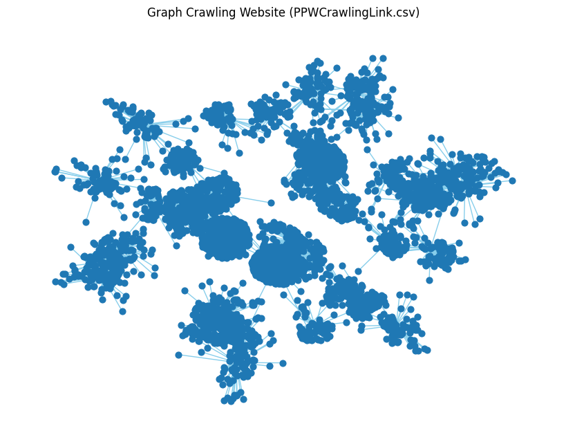
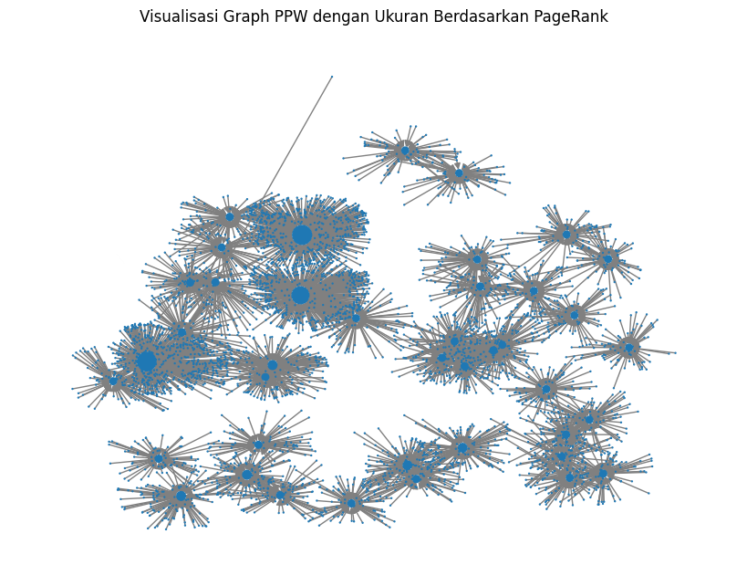

Graph & Page Rank#
import networkx as nx
import matplotlib.pyplot as plt
def load_google_data(file_path):
df = pd.read_csv(file_path, sep="\t", comment="#", names=["From", "To"])
print("✅ Jumlah edge:", len(df))
print("✅ Jumlah node unik:", len(pd.unique(df[['From', 'To']].values.ravel())))
return df
google_df = load_google_data("/content/web-Google_10k.txt")
---------------------------------------------------------------------------
NameError Traceback (most recent call last)
Cell In[1], line 10
7 print("✅ Jumlah node unik:", len(pd.unique(df[['From', 'To']].values.ravel())))
8 return df
---> 10 google_df = load_google_data("/content/web-Google_10k.txt")
Cell In[1], line 5, in load_google_data(file_path)
4 def load_google_data(file_path):
----> 5 df = pd.read_csv(file_path, sep="\t", comment="#", names=["From", "To"])
6 print("✅ Jumlah edge:", len(df))
7 print("✅ Jumlah node unik:", len(pd.unique(df[['From', 'To']].values.ravel())))
NameError: name 'pd' is not defined
# IMPLEMENTASI GRAPH, NODE, DAN 5 PAGERANK TERTINGGI
import numpy as np
def pagerank_manual(df, alpha=0.85, tol=1.0e-6, max_iter=100):
# Bangun graph
G = nx.DiGraph()
G.add_edges_from(df.values)
nodes = list(G.nodes())
N = len(nodes)
index = {node: i for i, node in enumerate(nodes)}
# Matriks transisi M
M = np.zeros((N, N))
for j, node in enumerate(nodes):
out_links = list(G.successors(node))
if len(out_links) == 0:
M[:, j] = 1.0 / N # dangling node
else:
for dest in out_links:
i = index[dest]
M[i, j] = 1.0 / len(out_links)
# Inisialisasi vektor PageRank p
p = np.ones((N, 1)) / N
teleport = np.ones((N, 1)) / N
# Iterasi hingga konvergen
for k in range(max_iter):
p_new = alpha * (M @ p) + (1 - alpha) * teleport
if np.linalg.norm(p_new - p, 1) < tol:
print(f"✅ Konvergen pada iterasi ke-{k}")
break
p = p_new
# Simpan hasil ke dict
pr = {nodes[i]: float(p[i]) for i in range(N)}
# Ambil 5 PageRank tertinggi
top5 = sorted(pr.items(), key=lambda x: x[1], reverse=True)[:5]
print("\n🔥 5 Node dengan PageRank tertinggi (data bapak):")
for node, val in top5:
print(f"Node {node} → PageRank: {val:.6f}")
# Visualisasi kecil (subset 100 node)
subG = G.subgraph(list(pr.keys())[:100])
plt.figure(figsize=(8, 6))
nx.draw(subG, node_size=10, edge_color="gray", arrows=False)
plt.title("Visualisasi sebagian Graph web-Google_10k")
plt.show()
return G, pr, top5
G_google, google_pr, google_top5 = pagerank_manual(google_df)
✅ Konvergen pada iterasi ke-58
🔥 5 Node dengan PageRank tertinggi (data bapak):
Node 486980 → PageRank: 0.006999
Node 285814 → PageRank: 0.004748
Node 226374 → PageRank: 0.003396
Node 163075 → PageRank: 0.003331
Node 555924 → PageRank: 0.002686
/tmp/ipython-input-4007595695.py:37: DeprecationWarning: Conversion of an array with ndim > 0 to a scalar is deprecated, and will error in future. Ensure you extract a single element from your array before performing this operation. (Deprecated NumPy 1.25.)
pr = {nodes[i]: float(p[i]) for i in range(N)}

def load_ppw_data(file_path):
df = pd.read_csv(file_path)
print(df.head())
print("✅ Total baris:", len(df))
return df
ppw_df = load_ppw_data("/content/PPWCrawlingLink (2).csv")
id page link_keluar
0 1 https://www2.trunojoyo.ac.id/ https://www2.trunojoyo.ac.id/
1 2 https://www2.trunojoyo.ac.id/ https://www2.trunojoyo.ac.id/
2 3 https://www2.trunojoyo.ac.id/ https://www2.trunojoyo.ac.id/#
3 4 https://www2.trunojoyo.ac.id/ https://www2.trunojoyo.ac.id/#
4 5 https://www2.trunojoyo.ac.id/ https://www2.trunojoyo.ac.id/#
✅ Total baris: 4627
# MEMBUAT GRAPH & MENAMPILKAN GRAFIKNYA
def build_graph(df):
# Ambil dua kolom pertama sebagai sumber dan tujuan
src_col, dst_col = df.columns[:2]
G = nx.DiGraph()
G.add_edges_from(df[[src_col, dst_col]].values)
print(f"✅ Jumlah node: {G.number_of_nodes()}")
print(f"✅ Jumlah edge: {G.number_of_edges()}")
# Visualisasi
plt.figure(figsize=(8,6))
nx.draw(G, node_size=40, edge_color="skyblue", with_labels=False, arrows=False)
plt.title("Graph Crawling Website (PPWCrawlingLink.csv)")
plt.show()
return G
G_ppw = build_graph(ppw_df)
✅ Jumlah node: 4668
✅ Jumlah edge: 4627

# MENENTUKAN NODE PENTING (DEGREE CENTRALITY)
def important_nodes(G):
deg_centrality = nx.degree_centrality(G)
top_nodes = sorted(deg_centrality.items(), key=lambda x: x[1], reverse=True)[:5]
print("🔥 5 Node Paling Penting (Degree Centrality):")
for node, val in top_nodes:
print(f"Node {node} → Degree Centrality: {val:.6f}")
return top_nodes
important_ppw = important_nodes(G_ppw)
🔥 5 Node Paling Penting (Degree Centrality):
Node https://www2.trunojoyo.ac.id/index.php/halinformasi/ → Degree Centrality: 0.121920
Node https://www2.trunojoyo.ac.id/index.php/halber/ → Degree Centrality: 0.116563
Node https://www2.trunojoyo.ac.id/index.php/halaman-kegiatan/ → Degree Centrality: 0.097707
Node https://www2.trunojoyo.ac.id/ → Degree Centrality: 0.025712
Node https://www2.trunojoyo.ac.id/# → Degree Centrality: 0.025712
# MENGHITUNG PAGERANK MANUAL UNTUK DATA CRAWLING
def pagerank_ppw_manual(G, alpha=0.85, tol=1.0e-6, max_iter=100):
nodes = list(G.nodes())
N = len(nodes)
index = {node: i for i, node in enumerate(nodes)}
M = np.zeros((N, N))
for j, node in enumerate(nodes):
out_links = list(G.successors(node))
if len(out_links) == 0:
M[:, j] = 1.0 / N
else:
for dest in out_links:
i = index[dest]
M[i, j] = 1.0 / len(out_links)
p = np.ones((N, 1)) / N
teleport = np.ones((N, 1)) / N
for k in range(max_iter):
p_new = alpha * (M @ p) + (1 - alpha) * teleport
if np.linalg.norm(p_new - p, 1) < tol:
print(f"✅ Konvergen pada iterasi ke-{k}")
break
p = p_new
pr = {nodes[i]: float(p[i]) for i in range(N)}
top5 = sorted(pr.items(), key=lambda x: x[1], reverse=True)[:5]
print("\n🔥 5 Node dengan PageRank tertinggi (Data Crawling):")
for node, val in top5:
print(f"Node {node} → PageRank: {val:.6f}")
# Visualisasi kecil
plt.figure(figsize=(8,6))
sizes = [pr[n]*4000 for n in G.nodes()]
nx.draw(G, node_size=sizes, edge_color="gray", with_labels=False)
plt.title("Visualisasi Graph PPW dengan Ukuran Berdasarkan PageRank")
plt.show()
return top5
ppw_top5 = pagerank_ppw_manual(G_ppw)
✅ Konvergen pada iterasi ke-84
🔥 5 Node dengan PageRank tertinggi (Data Crawling):
Node https://www2.trunojoyo.ac.id/index.php/halinformasi/ → PageRank: 0.056348
Node https://www2.trunojoyo.ac.id/index.php/halber/ → PageRank: 0.053878
Node https://www2.trunojoyo.ac.id/index.php/halaman-kegiatan/ → PageRank: 0.045181
Node https://www2.trunojoyo.ac.id/ → PageRank: 0.011975
Node https://www2.trunojoyo.ac.id/# → PageRank: 0.011975
/tmp/ipython-input-1998976182.py:28: DeprecationWarning: Conversion of an array with ndim > 0 to a scalar is deprecated, and will error in future. Ensure you extract a single element from your array before performing this operation. (Deprecated NumPy 1.25.)
pr = {nodes[i]: float(p[i]) for i in range(N)}
